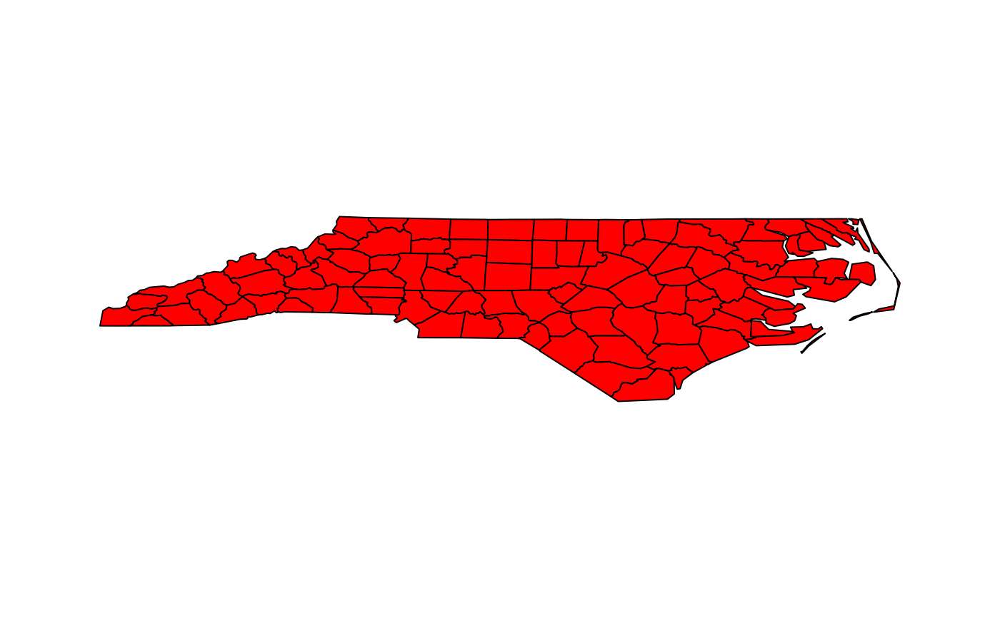

Create viewport from sf, sfc or sfg object
st_viewport(x, ..., bbox = st_bbox(x), asp)
| x | object of class sf, sfc or sfg object |
|---|---|
| ... | parameters passed on to viewport |
| bbox | the bounding box used for aspect ratio |
| asp | numeric; target aspect ratio (y/x), see Details |
The output of the call to viewport
parameters width, height, xscale and yscale are set such that aspect ratio is honoured and plot size is maximized in the current viewport; others can be passed as ...
If asp is missing, it is taken as 1, except when isTRUE(st_is_longlat(x)), in which case it is set to 1.0 /cos(y), with y the middle of the latitude bounding box.
#> Reading layer `nc' from data source #> `/tmp/RtmpDMBkVl/temp_libpath40f22cee84f4/sf/shape/nc.shp' #> using driver `ESRI Shapefile' #> Simple feature collection with 100 features and 14 fields #> Geometry type: MULTIPOLYGON #> Dimension: XY #> Bounding box: xmin: -84.32385 ymin: 33.88199 xmax: -75.45698 ymax: 36.58965 #> Geodetic CRS: NAD27